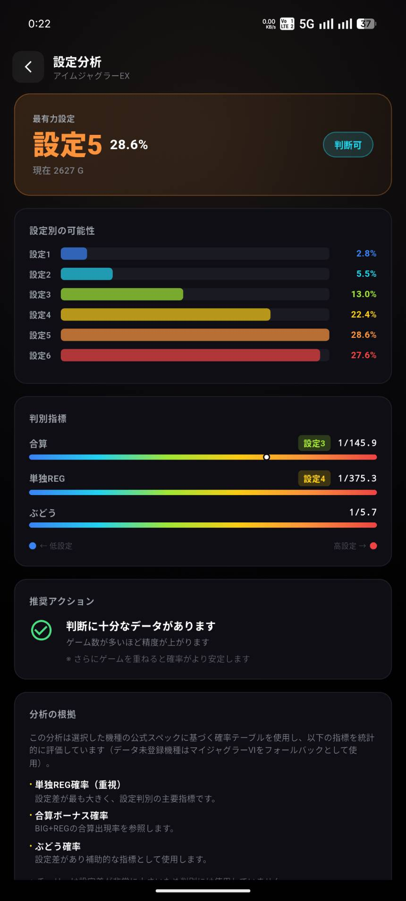
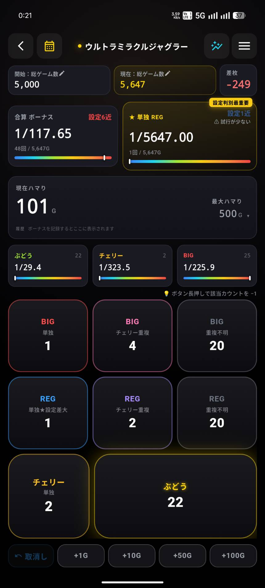
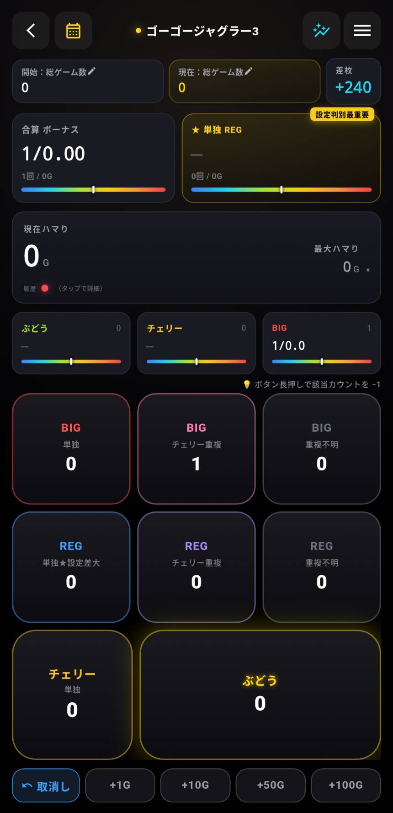
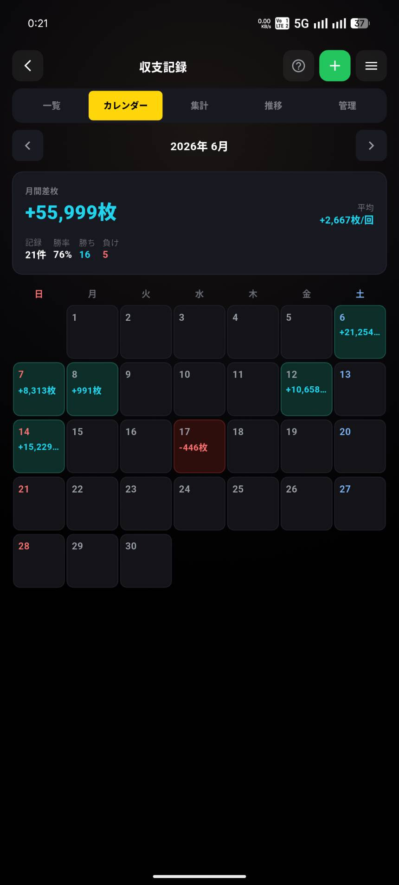
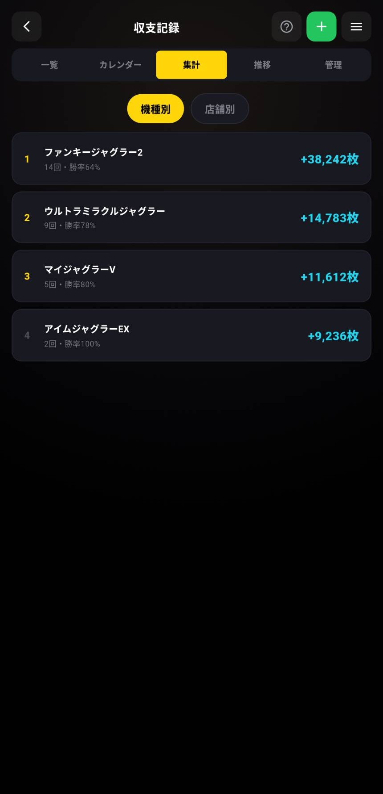
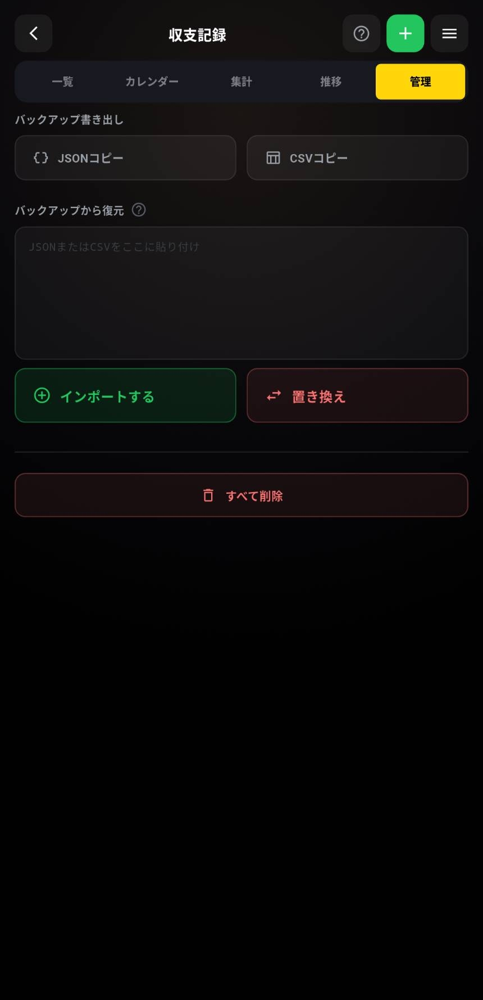

GOGOカウンター
親指1本で、設定が"見える"。
ジャグラー専用の設定判別 × 小役カウンター。カチカチ君は、もういらない。
※18歳以上対象・広告なし・収支記録のみ¥980買い切り
SETTING GAUGE｜このアプリ最大の武器
設定が、
"見える"。
カウントするだけで、合算・ぶどう・REG確率をメーカー公表値と自動で照合。いま打っている台が設定1〜6のどこにいるかを色とゲージで表示します。
※表示イメージ。アプリでは機種別スペックとリアルタイム照合します

カチカチ君は、もう卒業。
物理の小役カウンターは「数える」まで。GOGOカウンターは、数えた先の確率計算から設定推測まで全自動です。
STEP 1
touch_app数える
ぶどう・BIG・REG・チェリー重複を1タップ。誤タップはワンタップで取消し。
STEP 2
calculate確率が出る
合算・ぶどう・REG確率を自動計算。手計算も暗記も不要。
STEP 3
visibility設定が見える
設定1〜6のボーダーと照合し、青→赤の6色ゲージで今の立ち位置を表示。
物理カウンター（カチカチ君など）
- 小役カウント
- ○
- 確率計算
- 手計算
- 設定推測
- 経験と勘
- 収支記録
- メモ帳・手帳
- 持ち物
- カウンター＋スマホ
GOGOカウンター
- 小役カウント
- check_circle○＋取消し100回分
- 確率計算
- check_circle自動・リアルタイム
- 設定推測
- check_circle6色ゲージで見える化
- 収支記録
- check_circleカレンダー・グラフ
- 持ち物
- smartphoneスマホだけ
GOGOカウンターが
選ばれる理由
ホールで実際に使うことを考えた設計
主要ボタンはすべて画面下半分に集約。打ちながら親指1本で全操作が完結します。ボタンは大きく、誤タップしてもすぐ取消しできます。
「続行」か「やめ時」かを数字で判断
合算・単独REG・ぶどう確率を設定1〜6と常時比較。データが積み上がるほど、高設定かどうかの確信度が高まります。
電波の悪いホールでも安心のオフライン設計
インターネット接続は不要。収支や実戦データは端末内にのみ保存され、外部サーバーには一切送信されません。
主な機能
01 / COUNT
1タップ小役カウント
ぶどう・単独BIG・チェリー重複BIG・単独REG・チェリー重複REGを1タップで記録。単独とチェリー重複を分けて数えられるから、設定推測の精度が上がります。

02 / GAUGE
設定ゲージ ─ 青から赤へ
合算・単独REG・ぶどう確率をメーカー公表スペックの設定1〜6ボーダーとリアルタイム比較。設定1の青から設定6の赤へ変わる色とゲージで、「今の立ち位置」がひと目でわかります。
03 / MEDALS
差枚リアルタイム計算
ボーナスをまたいだ自分の差枚を自動追跡。「今日プラスかマイナスか」を感覚ではなく数字で把握できます。

04 / RECORD PREMIUM ¥980
収支記録 ─ 勝ちパターンが見えてくる
カレンダー・月次集計・機種/店舗別ランキング・推移グラフで収支を多角的に管理。数字が積み上がるほど、勝てる曜日・店・機種の傾向が見えてきます。

05 / RESUME
セッション復帰
休憩・移動・閉店持ち越しでも、履歴から「この台の続き」を即再開。カウントデータが消えない安心感があります。

06 / BACKUP
データ管理・引き継ぎ
収支データはJSON形式でエクスポート／インポート可能。スマホを買い替えても、積み上げたデータごと引き継げます。

ギャラリー

こんな場面で使える
SCENE 01
台についた瞬間からスタート
機種を選んでカウントを開始するだけ。昨日打った台の続きも履歴からすぐ再開できます。
SCENE 02
ボーナスが来るたびに1タップ
片手親指で完結。設定ゲージが積み上がるほど、高設定かどうかの確信度が上がっていきます。
SCENE 03
設定分析が「やめ時」を教えてくれる
500Gを超えて合算がキツくなってきた。設定分析を開けば、データが今の立ち位置を示してくれます。感覚ではなく根拠のある撤退判断を。
盲信させないための、3つの設計
設定判別ツールは「当たる」と言い切った時点で嘘になります。GOGOカウンターは、正直であることを設計方針にしています。
信頼度を正直に表示
回転数が少ないうちは「信頼度が低い」と明示。二項分布ベースの設定分析は、少ない試行では控えめに、回すほど精度が上がります。
確率データは出典を明記
機種別スペックはメーカー公表値と解析サイトの推定値を使用し、出典をアプリ内に明記。不明な数値は「調査中」と正直に表示します。
データは端末の中だけ
実戦データ・収支はすべて端末内に保存。アカウント登録なし・外部送信なし・広告なし。あなたのデータはあなただけのものです。
Google Playレビューより
実際にGoogle Playへ投稿されたレビューの抜粋です（2026年7月）
「ホールで実際に使ってみて、片手でサクサク操作できる設計に驚きました。横画面がかなり使いやすい。ぶどうカウントのボタンが大きくて誤タップもほぼゼロ。設定の色分けもわかりやすく今まで使ってた無料アプリとは完成度が全然違います。」
Google Play レビューより抜粋
「ダークモード固定なのがホールで使うには最高。他のアプリは白背景でホールの暗さとのコントラストがきつかったです。回転数が少ないうちは『信頼度低め』と表示してくれる誠実さも好き。」
Google Play レビューより抜粋
対応機種
ジャグラーシリーズ 全8機種対応
（近日対応）
※マイジャグラーⅥは近日対応予定です
料金
まずは無料でお試し。気に入ったら収支記録を解放しよう。
FREE
¥0
基本機能は永久無料・広告なし
- check_circle 小役・ボーナスカウント
- check_circle 設定ゲージ（リアルタイム設定推測）
- check_circle 差枚リアルタイム計算
- check_circle セッション管理・復帰
- check_circle 全8機種対応・機種別スペック内蔵
PREMIUM
¥980
買い切り・一度の購入で永久利用
- check_circle FREEの全機能
- check_circle 収支カレンダー（勝ち負けを一覧表示）
- check_circle 月次集計・機種別・店舗別ランキング
- check_circle 推移グラフ（月別・累積）
- check_circle データのエクスポート／引き継ぎ
カレンダーに数字が積み上がると、勝てる曜日・店・機種の傾向が見えてきます。¥980は、1回分の軍資金より安い。
androidアプリ内で購入（¥980）追加課金なし・サブスクなし
よくある質問
無料でダウンロードできますか？expand_more
はい。アプリ本体は無料で、小役・ボーナスカウント・設定ゲージ・差枚計算など基本機能をすべてお使いいただけます。広告もありません。
カチカチ君（物理の小役カウンター）と何が違いますか？expand_more
数えるところまでは同じですが、GOGOカウンターは数えた後の確率計算と設定推測まで自動で行います。機種別スペックとの照合・信頼度表示・収支記録まで、スマホ1台で完結します。
無料版とプレミアム版の違いは？expand_more
カウント系（小役・ボーナス・差枚・設定ゲージ・セッション管理）はすべて無料です。アプリ内で¥980を購入すると、収支記録（カレンダー・月次集計・グラフ・データ管理）が使えるようになります。
¥980は買い切りですか？expand_more
はい。一度購入すれば追加料金なく永久にご利用いただけます。月額サブスクではありません。
インターネット接続は必要ですか？expand_more
不要です。カウントから収支記録まで全機能をオフラインで使えます。電波の悪いホールでも安心です。
データはどこに保存されますか？expand_more
お使いの端末内にのみ保存されます。アカウント登録は不要で、クラウドや外部サーバーへの送信は一切ありません。
機種変更したらデータは消えますか？expand_more
プレミアム版ではJSON形式でエクスポート・インポートができ、機種変更後もデータを引き継げます。
どのジャグラー機種に対応していますか？expand_more
マイジャグラーV・ゴーゴージャグラー3・ファンキージャグラー2・ネオアイムジャグラーEX・ハッピージャグラーVIII・ウルトラミラクルジャグラー・ジャグラーガールズSS・ミスタージャグラーの全8機種です。マイジャグラーⅥは近日対応予定です。
iPhoneでも使えますか？expand_more
使えます。iOS版（App Store）・Android版（Google Play）の両方を公開しています。
今すぐ、感覚打ちを
卒業しよう。
まずは無料で。カチカチ君はもういらない。
※18歳以上対象・iOS / Android 両対応